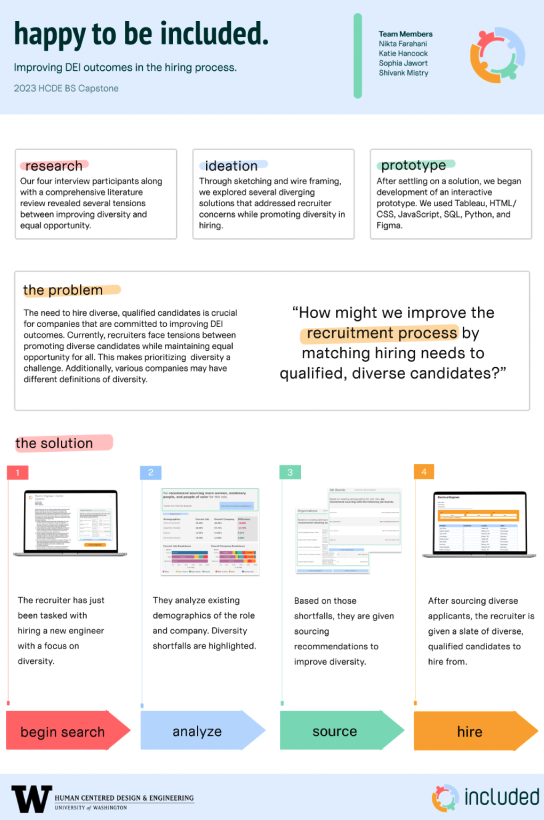
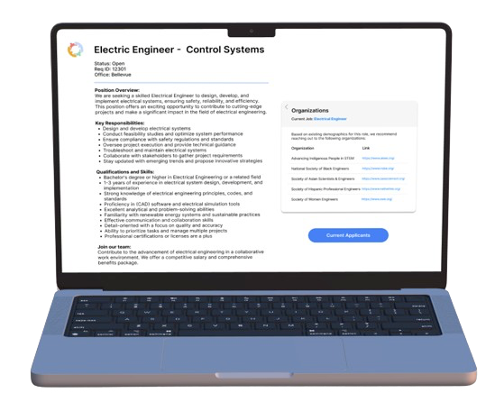
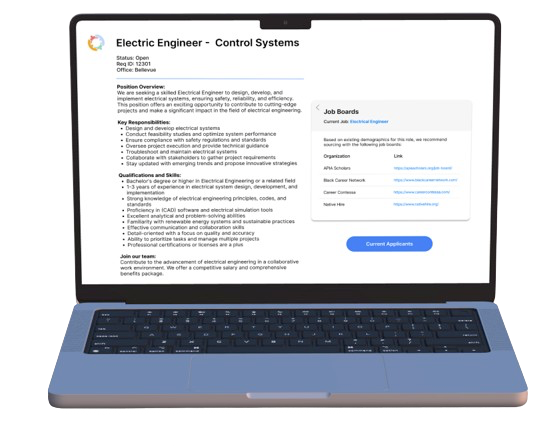
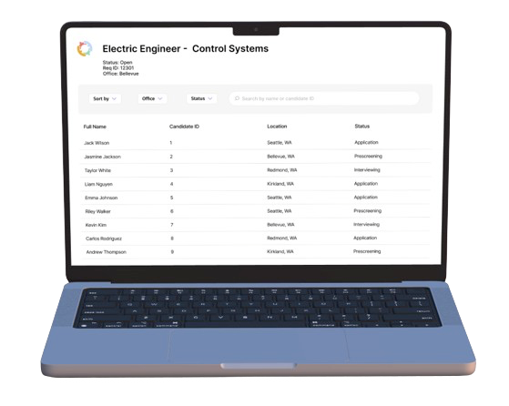
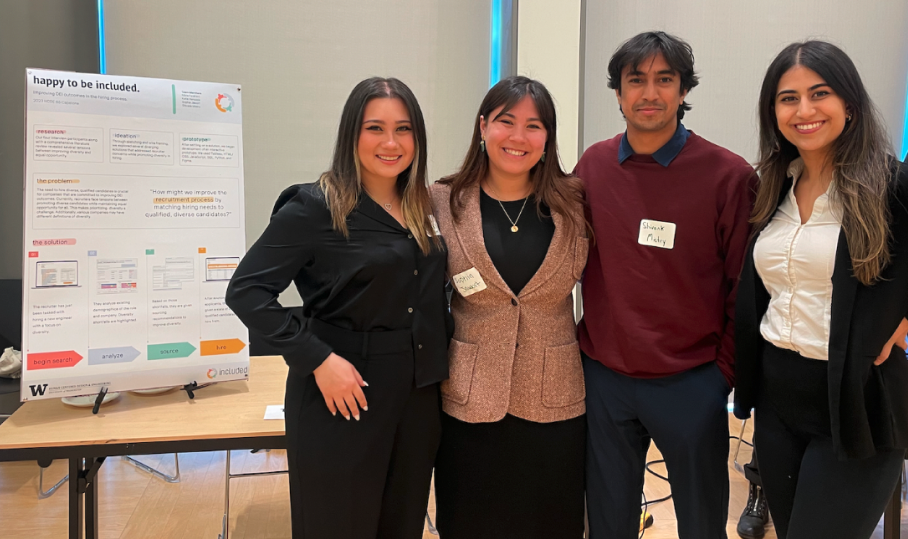

Matching hiring needs to qualified, diverse candidates. Happy to be Included addresses the challenging task of balancing diverse hiring needs with finding the most qualified candidates. In a climate where diversity in the workplace is a priority, recruiters face the dilemma of maintaining quality while striving for inclusivity. This project aims to spot areas lacking diversity and offers practical solutions to source diverse, qualified candidates.
Our Team Poster
Selected Work
I used pencil-and-paper sketches to brainstorm and conceptualize ideas, capturing initial thoughts and design elements for the app's interface.
Screen 1
Screen 2
Screen 3
Screen 4
Awards & Mentions
Our project received the prestigious 'Brave' award at the capstone showcase among 20 undergraduate teams, acknowledging our innovative approach in redefining recruitment processes. This recognition highlighted the risks we took in design, research, ideation, and prototyping.
My Team and I at the Capstone Showcase